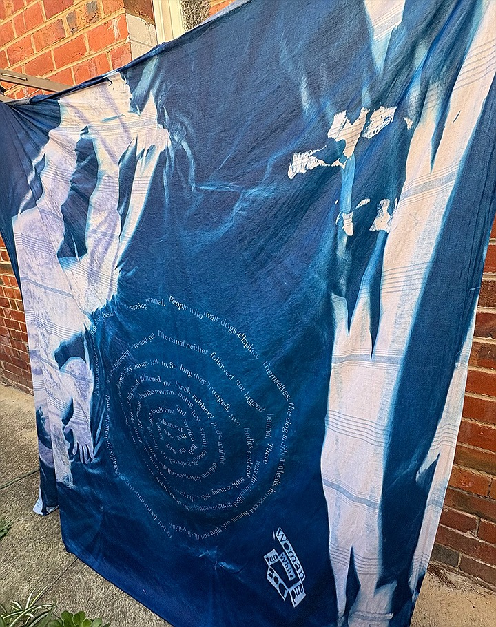
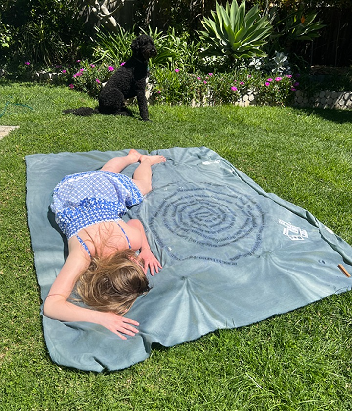
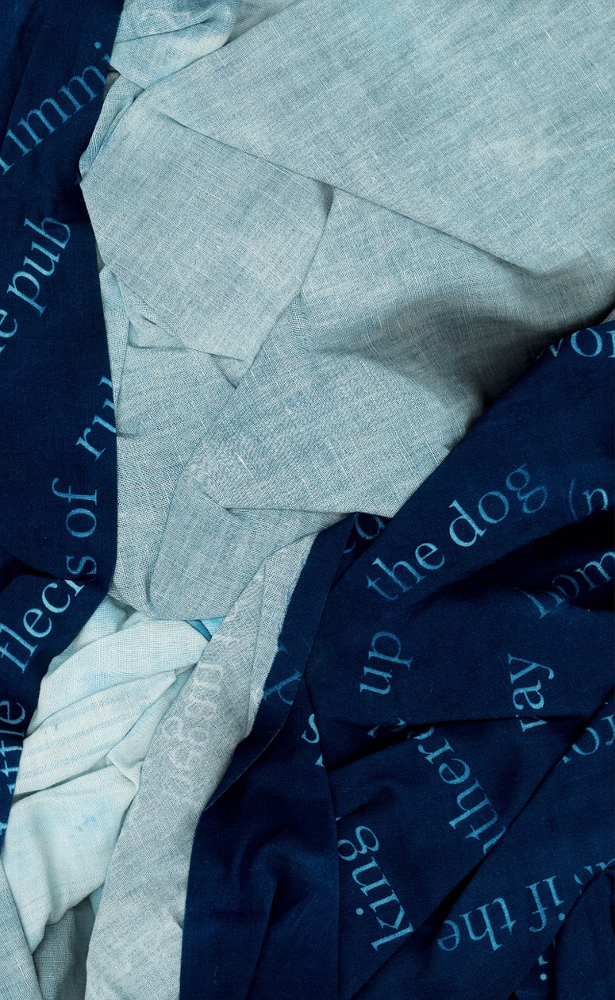
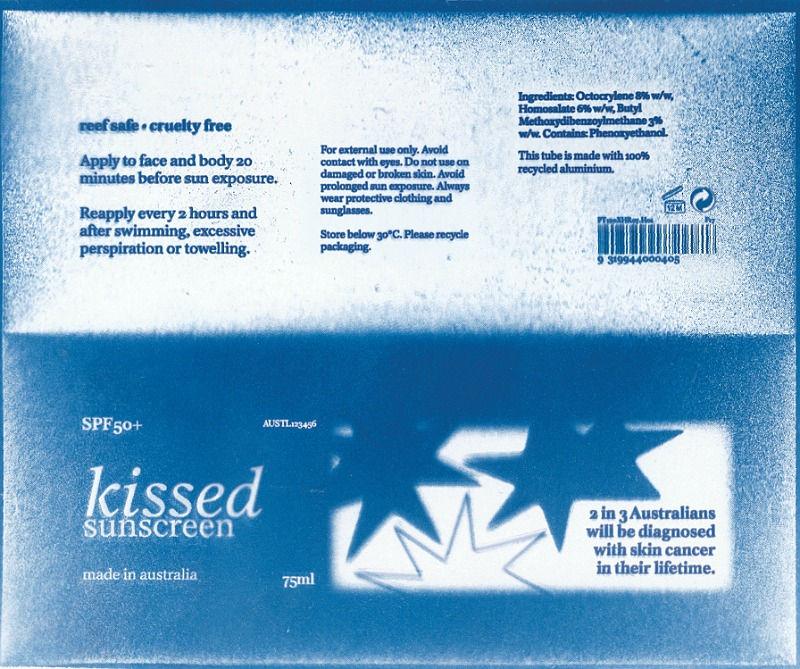
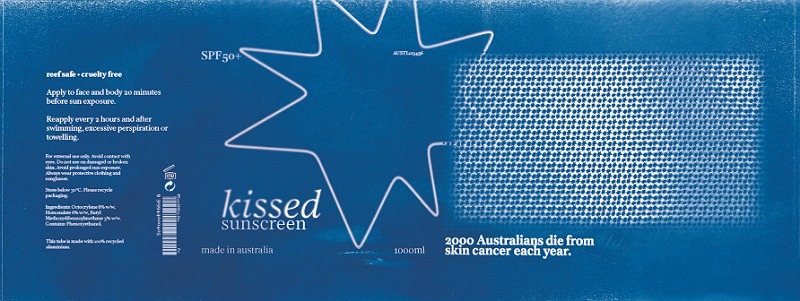
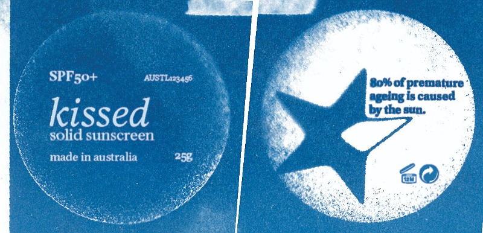
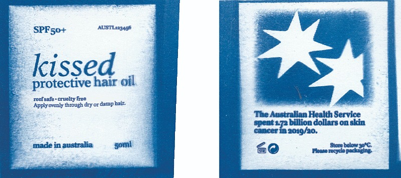
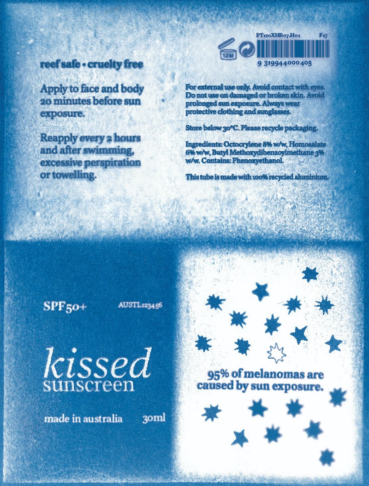

These three projects, Words as Events, Woman and Dog and Kissed, show off my practice using cyanotypes. The first two of these were produced in WIST 2025, and the third was a branding project in Infographics 2026. Over the course of these projects, I have experimented with how cyanotypes respond on different fabrics/papers, with different stencils/negatives, exposure times and processing. I really do love this technique so much, and I feel like it never comes out so poorly as to be unusable.
In my project Woman and Dog, I had originally planning to make three different dresses, using wine, ink and the sun respectivly to 'stain' each one. My continuation/reinvention of this idea is thus the use of turmeric and beetroot photosensitive dyes to produce three garments/one garments with three colours. I also really wanted to go back to, and continue exploring the single line written statement, that I gave for this project; "sunlight and process and tenderness and care." This sentiment was echoed on labels sewn into the dress as well, which used another technique to apply text to fabric. This technique involves simply taping a piece of ironed fabric to a piece of printer paper, and printing the text directly onto the fabric.








